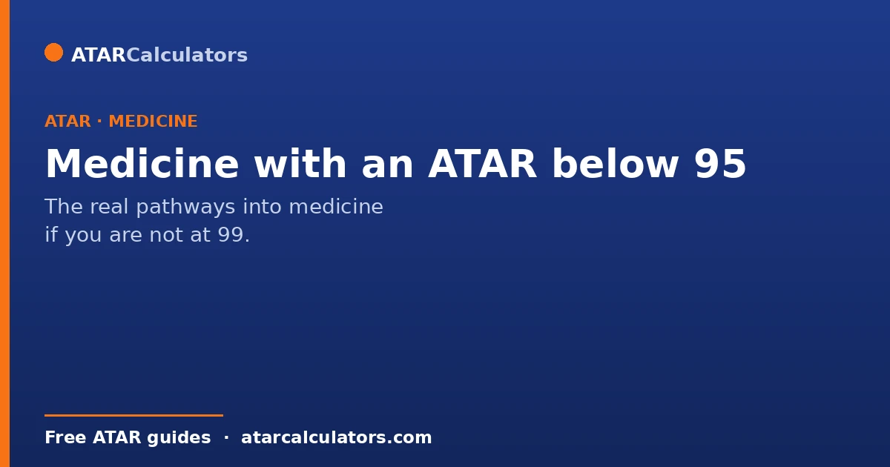
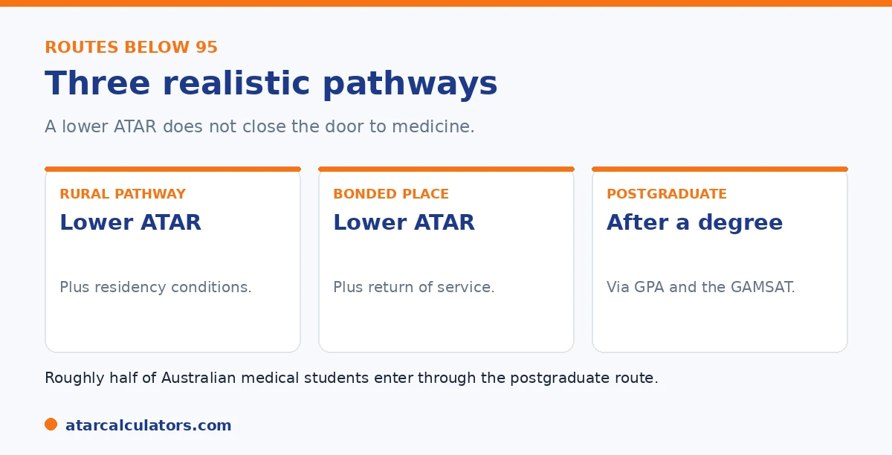

Here is the short version. There is no single lowest ATAR for medicine, because it depends on the pathway. Below 95, three routes become realistic. Rural pathways, which can have a lower ATAR but residency conditions. Bonded medical places, which have a lower ATAR in exchange for a return-of-service commitment. And the postgraduate route, which does not use ATAR at all. Roughly half of medical students enter via the postgraduate route.
A result below 95 can feel like the end of a medical dream. It is not. The system has several routes that open up precisely for students in this position.
Below are the realistic pathways below 95. To explore your options, use our medicine ATAR calculator.
Key takeaways
- There is no single lowest ATAR; it depends on the pathway.
- Rural pathways can have a lower ATAR, with conditions.
- Bonded places trade a lower ATAR for return of service.
- The postgraduate route does not use ATAR at all.
- Roughly half of medical students enter via postgraduate study.
- No single ATAR closes the door to medicine.
There is no single lowest ATAR
First, a key point. There is no single lowest ATAR for medicine, because it depends entirely on the pathway. The headline cut-offs apply to standard direct entry. Other pathways have different, often lower, floors.
This matters because students searching for "the lowest ATAR for medicine" are usually really asking a different question. That question is: "can I still do medicine if my ATAR is not 99?" The honest answer is yes, often. Standard direct entry does sit high, typically 95 as a floor and 99 plus as a realistic target. But that figure only describes one door. Once you count rural entry, bonded places, interstate options and the graduate route, the effective minimum drops considerably, and for some pathways the ATAR stops being the deciding factor at all. So rather than hunting for one magic number, it is more useful to match your ATAR to the pathway that fits it. The sections below walk through the main routes and the kind of ATAR each one realistically needs.

So instead of asking for one number, it helps to ask which pathway fits you. Below are the three that open up below 95.
Rural pathways
The first route is rural pathways. Many medical schools reserve places for students from a rural background, sometimes with a lower ATAR requirement. In exchange, there can be conditions, such as a commitment to study or work in a rural area.
You usually need a genuine rural background, assessed against a standard model. If that is you, this can be one of the most accessible routes. See our rural medicine guide.
The eligibility rules are the thing to get right, and to check early. Rural entry is defined by where you have lived, usually a set number of years in a qualifying rural or regional postcode, verified against a national classification. It is not enough to have a rural connection in passing. The schemes want a documented history. Because of that, the smartest move is to confirm your eligibility well before Year 12, ideally when you first start thinking about medicine. So there are no surprises when applications open. Where you do qualify, the benefit can be large. The effective ATAR requirement may fall several points, and at some schools rural background is weighted so heavily that it becomes the strongest part of your application rather than a tie-breaker. For a committed student from the country, this is often the single most realistic route into direct-entry medicine.
Bonded medical places
The second route is a bonded medical place. These can have a lower ATAR than a standard place, in exchange for a return-of-service commitment. That means agreeing to work in an area of need for a set period after you qualify.
It is a real trade-off worth understanding before you commit, but for many students it is a genuine way in. The commitment is a few years of practice where doctors are needed most.
Weighing the trade-off honestly helps. The upside is straightforward. A bonded place can lower the entry bar or add capacity that would not otherwise exist, giving you a seat in a course you might just miss on a standard offer. The obligation, a defined period working in an area of need after you qualify, sounds daunting at 17 but lands very differently by the time you graduate a decade later. Many bonded doctors find the needed years genuinely rewarding. This is because regional and underserved communities often offer broader clinical experience and real responsibility early in a career. The key is to read the specific terms before you accept. How long the service period is, where it can be completed, and what happens if your circumstances change. Go in informed, and for a committed future doctor it is frequently a fair exchange, a few years of service in return for the career itself.
Want to see which pathways fit your ATAR?
Try the medicine ATAR calculator →The postgraduate route
The third route is the most common of all. Postgraduate, or graduate-entry, medicine does not use your ATAR. You complete any approved bachelor's degree, then apply using your university results and the GAMSAT, plus an interview.
So your Year 12 result becomes much less important. A strong university record can put you on equal footing, whatever your ATAR. Roughly half of medical students enter this way. See our postgraduate guide.
Keeping perspective
The honest message is that no single ATAR closes the door to medicine. A result below 95 rules out some direct-entry places, but it leaves rural pathways, bonded places, and the postgraduate route wide open.
Many practising doctors did not enter straight from school with a 99. They took a longer route, and it worked. The destination is the same. See our full medicine ATAR guide.
Rural-focused undergraduate entry
Some undergraduate programs focus on rural and regional medicine and accept ATARs below the metro norm, as they select partly for a commitment to work where doctors are needed. James Cook University is the best-known example, with its own selection process rather than the UCAT.
These programs exist to address workforce shortages in rural, regional and remote Australia. In return for a lower ATAR threshold, they often look for genuine rural intent or background, and may expect graduates to work in areas of need.
Because details and requirements change, confirm the current process directly with any rural-focused program. The lower threshold is real, but it comes with expectations, so understand what a place actually involves before you rely on it.
Provisional and assured pathways
Some universities offer provisional or assured entry, where school leavers gain a conditional place in medicine, sometimes with a slightly lower ATAR requirement than direct entry, provided they meet other conditions.
These pathways vary a great deal and often have specific eligibility rules, additional tests, or interviews. They are worth researching if your ATAR is strong but not at the very top, since they can be a route in that direct entry would not offer.
As always, check the fine print. Provisional pathways can carry commitments or conditions, so understand exactly what you are signing up for before treating one as your plan.
The graduate-entry route
The most common way into medicine without a top school-leaver ATAR is the graduate route. You complete a relevant undergraduate degree, then apply for graduate-entry medicine using your university results, the GAMSAT and an interview.
This route means your school ATAR only needs to get you into a suitable first degree, not straight into medicine. For many students whose ATAR falls short of undergraduate medicine, it is the realistic path. See postgraduate versus undergraduate medicine.
It takes longer, but it opens medicine to a much wider group. A solid ATAR into a science or health degree, followed by strong university results, keeps the door genuinely open.
Looking interstate
Cutoffs and selection methods differ between universities and states, so looking interstate widens your options. A profile that misses at one university may succeed at another that weights the UCAT or interview differently.
Applying broadly is a sensible strategy for any student near the threshold. The more programs you consider, across more states, the better your chance of finding one whose selection method suits your strengths.
A realistic view of lower-ATAR medicine
It is important to be realistic. Pathways below the usual cutoff exist, but medicine remains highly competitive everywhere, and even rural and graduate routes are selective. A lower ATAR threshold does not mean easy entry.
So treat these pathways as genuine options worth pursuing, not as shortcuts. They still demand strong performance, whether in the UCAT, a first degree, the GAMSAT, or an interview. The bar moves, but it stays high.
Persistence and re-application
Many successful medical students did not get in on their first try. Re-applying, improving a UCAT or GAMSAT score, or entering through a graduate pathway after another degree are all common routes into medicine.
So a first-round miss is not the end. If medicine is your goal, there are multiple entry points and multiple attempts available. Persistence, combined with a realistic plan, is often what distinguishes those who eventually get in.
If your ATAR is below the usual cutoff
If your ATAR falls short of undergraduate medicine, a sensible plan has three parts: research rural and provisional pathways, enter a strong related degree as a graduate-entry route, and apply broadly across universities and states.
Prepare well for whichever selection tools apply, whether the UCAT now or the GAMSAT later, and treat an interview as a skill to practise. A lower ATAR narrows the direct options, but it rarely closes off medicine entirely.
Using a gap year to strengthen
Some students take a year after school to strengthen a medicine application, by improving a UCAT score, gaining relevant experience, or reconsidering their pathway. For the right student, a considered gap year can improve the next attempt.
A gap year is not automatically helpful, so use it with a plan. Whether re-sitting the UCAT, starting a related degree, or preparing for graduate entry, the aim is to arrive at your next application genuinely stronger.
Related health degrees as stepping stones
Related health and science degrees, such as biomedical science, are common stepping stones into medicine. They provide a strong foundation and can lead into graduate-entry medicine, while being worthwhile qualifications in their own right.
So if your ATAR falls short of undergraduate medicine, entering a related degree is rarely a wasted step. It keeps the graduate route open and, for some students, opens up other rewarding health careers they had not considered.
A realistic view of medicine entry
It helps to keep perspective. Medicine is competitive, and many capable students take an indirect route in. A lower ATAR narrows the direct options, but with persistence and a realistic plan, the goal remains reachable for many.
So treat a lower ATAR as a change of route, not a closed door. The students who succeed are often those who stay committed, prepare well for each selection stage, and keep applying through the pathways open to them.
The ATAR is only part of medicine entry
For most undergraduate medicine, the ATAR is one of three hurdles. You also usually need a strong result in an admissions test, such as the UCAT, and to perform well at interview. A high ATAR alone is rarely enough.
So even a very strong ATAR does not guarantee a place. The test and interview carry real weight, which is why students with lower ATARs can sometimes succeed where higher-ATAR applicants do not.
A realistic plan for medicine
Because entry is so competitive, a sensible plan includes a strong back-up. Many doctors began in a science or health degree, then entered medicine through the graduate route, or reapplied after building their application.
So treat a related degree not as a failure but as a genuine pathway. Combined with a good test score and interview, it keeps the door to medicine open even if your ATAR falls short of the direct-entry mark.
Common questions
What's the lowest ATAR for medicine?
There is no single figure. This is because it depends on the pathway. Standard direct entry is very high. But rural pathways and bonded places can have lower ATAR floors. And the postgraduate route does not use ATAR at all.
Can you do medicine below 95?
Yes. Below 95, rural pathways and bonded medical places become realistic, both with conditions. The postgraduate route, via a degree and the GAMSAT, does not use ATAR and is how roughly half of medical students enter.
What are rural medicine pathways?
They are entry routes that reserve places for students from a rural background, sometimes with a lower ATAR, in exchange for conditions like studying or working rurally. A genuine rural background is usually needed.
Do bonded places have a lower ATAR?
They can. A bonded medical place may have a lower ATAR than a standard place, in exchange for a return-of-service commitment. That means you agree to work in an area of need for a set period after qualifying.
Is the postgraduate route easier with a low ATAR?
It does not use ATAR at all, so a lower Year 12 result is much less of a barrier. You apply using your university results and the GAMSAT instead. A strong degree can put you on equal footing.
Find your pathway into medicine
See realistic routes into medicine based on your ATAR. Free, and no signup.
Open the medicine ATAR calculator →Related guides
This guide is general information for students and parents, not formal admissions advice. ATAR cut-offs, UCAT and GAMSAT requirements, interview formats and pathways vary by university and change every year. For graduate entry, applications run through GEMSAS, and the UCAT and GAMSAT are run by their own bodies. Any figures here are approximate and based on recent years. So always confirm the current details with each university and your state admissions centre (such as UAC, VTAC, QTAC, SATAC or TISC). Reviewed by the ATARCalculators Editorial Team.